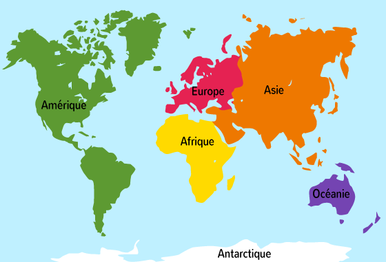

Aprés avoir visualiser les différents dashbord de nos 5 continents, on peut conclure les facteurs qui ont mené à la contamination pour chaque continent
Vu que l’asie prend la première place en nombre de population et la deuxième place pour les cas confirmés mais par contre le taux d’active est faible par rapport au nombre de population donc ce qui signifie qu’il y en a d’autres facteurs qui ont poussé à cette propagation: la première chose c’est que l’asie occupe la deuxième place à savoir la consommation des medicaments, la troixième place pour le taux d’obésité et la quatrième place au niveau de la consommation des produits alcholiques , enfin pour les aliments qui sont bénéfiques pour lutter contre le covid on Remarque que la consommation de ces aliments est trés faible. Et n’oublions pas le facteur météorologique qui aident aussi à la propagation du virus vu que le climant dans l’asie est humide
L’Europe occupe la première place au niveau des cas confirmés, cela s’explique par plusieurs facteurs dont on peut citer ; la première place au niveau du taux active, nombre de consommation des médicaments , taux d’obésité, consommation des produits alcholiques et également on remarque que la consommation des produits qui sont bénéfiques pour lutter contre le covid est trés faible. Enfin n’oublions pas que le facteur météorologique qui a beaucoup aide la propagation du virus dans l’Europe vu que le climat est humide et froid
L’afrique occupe la cinquème place au niveau des cas confirmés, l’avant dernière place au niveau de taux active, troixème place dans la consommation des medicaments, quatrième place dans le taux d’obésité , et la deuxième place au niveau de la consommation des produits alcholiques, par contre au niveau des aliments bénéfiques pour lutter contre le covid, l’afrique consomme une quantité importante par rapport aux autres continents et n’oublions pas le grand facteur météorologique qui a aidé l’afrique est son climat sec et chaud
Ce continent est le moins contaminés avec un pourcentage trés faible, cela s’explique par le taux d’active trés faible, le mois consammable des médicaments, produits alcholiques, occupant la dérnière place au niveau du taux d’obésité, et n’oublions pas le facteur météorologique qui a beaucoup aide ce continent à la stabilité de la propagation.
Pour l’amérique de nord occupe la troisième place au niveau des cas confirmés et la deuxième au niveau du taux active, par contre le sud occupe la quatrième place au niveau des cas confirmés et du taux active. Quand on analyse les facteurs qui ont poussé à cette contamination ainsi que cette comparaison entre ces deux sous continents ; on trouve en premier lieu l’Amérique du nord consomme plus les medicaments par rapport au sud, le pourcentage des produits alcholiques, le plus enregistré au niveau du taux d’obésité est le nord , et enfin le grand facteur qui explique beaucoup cette comparaison est le climat vu que le nord d’amérique ce caractérise par un climat humide et froid , par contre le sud a un climat sec même si ils consomment tous les deux presque la même quantité au niveau des aliments